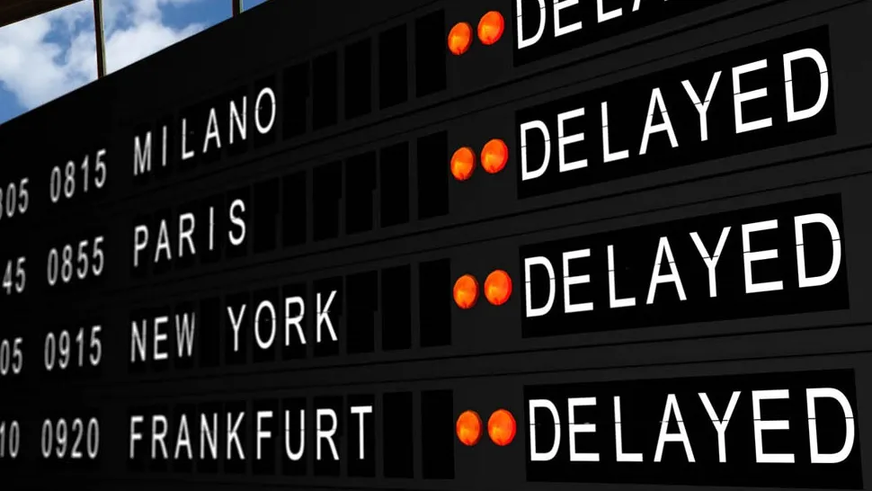

Flight delays can cause significant disruptions and inconveniences for travelers, leading to a host of problems. These issues include schedule disruptions, missed connections, and the resulting frustration and anxiety. Passengers often endure extended waiting times at the airport, facing discomfort and limited access to amenities. The financial burden of unexpected expenses for meals, accommodations, or alternative transportation adds to the stress. Health and comfort concerns arise from prolonged periods of sitting and waiting, while the uncertainty about future travel plans, including hotel reservations and scheduled activities, can be overwhelming.
Understanding the severity of these challenges, I was inspired to create a flight delay prediction system using machine learning. By analyzing vast amounts of historical flight data, weather patterns, air traffic control information, and other relevant factors, this system can accurately predict potential delays. This advanced technology allows airlines and passengers to better prepare for and mitigate the impact of delays.
With this flight delay prediction system, passengers can receive real-time updates and make informed decisions about their travel plans. Airlines can optimize their operations, improve scheduling, and enhance overall customer satisfaction. By reducing the uncertainty and stress associated with flight delays, this innovative solution aims to improve the travel experience for everyone involved.